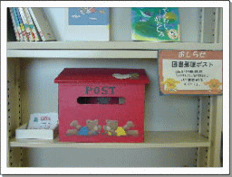
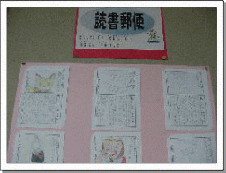
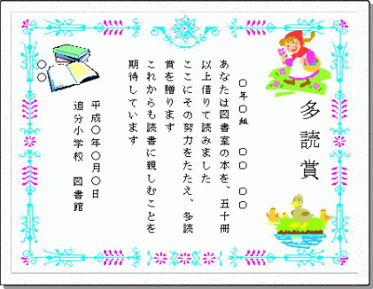
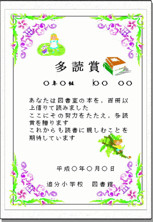
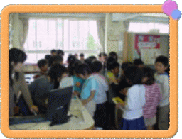
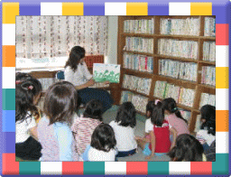

図書館
図書館の取り組み
| 貸し出し冊数 | １日１冊までです。 ただし，長期の休みのときは複数冊借りることができます。 |
| 借りられる日数 | １週間までです。 次の人が待っていますので，早めに返しましょう。 |
| 貸し出し時間 | 午前中の休み時間か，昼休みの１３：１０～１３：２５まで。 |
| 貸し出し方法 | 先生やボランティアの方や図書委員に，本のバーコードがついている面を見せる。 |
| 返却方法 | 図書館の返却棚へそろえて返す。 |
図書館に置いてあるはがきに絵や文を書き，ポスト（上の写真。図書館内にあります）に投函すれば，図書委員が配達することになっています。上手に書けているはがきは，本人の了解を得て図書館前の掲示板に掲示させてもらっています。（下の写真）
保護者の皆様からお子様への投函も受け付けています。学校へお越しの際に，図書館に置いてある読書郵便のはがきをお持ちください。記入後，図書館のポストへ投函してください。
 本校の図書館では，図書館の本を低学年７０冊，中学年５０冊，高学年３０冊借りて読むごとに「多読賞」と呼ばれる賞状を渡しています。数多く読めばいいというものではありませんが，子どもたちが本を読むきっかけになればと思い，渡しています。
多読賞を目指してたくさんの本を借りる中で，すばらしい本にたくさん出会ってほしいと思います。
 子どもたちによい本と出合ってほしいと願い，各学年10冊の読破図書を選定しました。低学年7冊，中学年は5冊，高学年は3冊を読破した子には「読破証明書」を渡しています。せっかく図書館へ来ても，「どの本を借りようかと悩んでいる間に時間が来てしまって借りられなかった･･･。」という子がときどきいます。そのような子が，本を選ぶ際の目安になればと思います。
（各学年のロゴが，それぞれの読破図書カードにリンクしています。）
図書館運営を支えるボランティア活動
本校では，午前中の間「図書館ボランティア」として保護者の方が図書館に常駐してくださり，本の貸し出しや返却，整理，補修などの作業を行ってくださっています。
いつ行っても本が借りられるので，子どもたちは安心して図書館へ行くことができます。そのおかげで，子どもたちの本を借りる冊数がとても多くなりました。
図書館ボランティアに興味のある方大募集！
「図書館ボランティアをしてみたい！」という方がいらっしゃいましたら，お子様を通じて担任へその旨をお伝えいただくか，メールにてお知らせください。担当から御連絡します。
メールアドレス: oiwake-e@city.hamamatsu-szo.ed.jp
ブレーメンの会は，保護者や地域の方による読み聞かせボランティアです。
基本的な活動としては，火曜日の朝（８：０５～８：１５）に各教室で行う読み聞かせです。
それ以外にも，七夕に合わせたお話会を行ったり，秋の読書週間に人形劇やペープサートなどを上演したりして，子どもたちを喜ばせてくれています。最近は，活動場所が本校だけにとどまらず，他の小学校からも依頼を受けて上演をしに行くこともあります。
子どもたちは読み聞かせの時間をとても楽しみにしており，どの学年でもこの時間はお話の世界に浸っています。
読み聞かせをしてみませんか？
読み聞かせに興味のある方，ブレーメンの会に入って活動をしてみませんか。専門的な知識や技術はいりません。本の選び方や話し方なども，メンバーの方が教えてくださいます。
興味のある方は，お子様を通じて担任までその旨をお伝えいただくか，メールにて御連絡ください。代表の方から御連絡を差し上げます。
メールアドレス: oiwake-e@city.hamamatsu-szo.ed.jp
